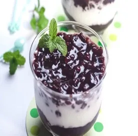
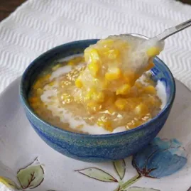
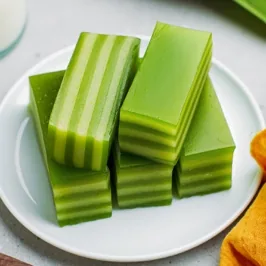
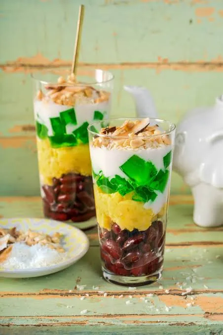
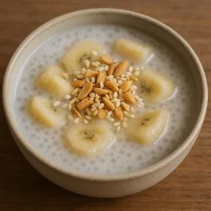
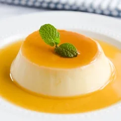

Chè kho
Pâte sucrée de haricots mungo
- Dans l’assiette
- Haricots mungo, sucre, graines de sésame
- Origine
- Hà Nội / Nord
Jamais mangé mais ça a l'air bon lol
VIETNAM BELLY TOUR
Douceurs, chè et gâteaux vietnamiens.
Pâte sucrée de haricots mungo
Jamais mangé mais ça a l'air bon lol

Yaourt au riz gluant violet
Faut je goute aussi

Dessert au maïs
Parfois servi chaud. Hyper réconfortant, très bon

Gâteau vapeur en couches
Le meilleur des gâteaux by far. Un goût comme "vanillé". C'est fun à manger car tu peux retirer couche par couche. Très dur à cuisiner

Dessert aux trois couleurs
Un incontournable, il peut y avoir des fruits dedans. Ca peut vite devenir fourre tout. Mais pas sûr que t'aime ce dessert

Banane au lait de coco
Quand tes parents sont venu manger chez moi, il y a eu ce dessert. C'est très léger, ça glisse tout seul et très bon

Flan au caramel vietnamien
Lol
Aucun résultat pour cette recherche.